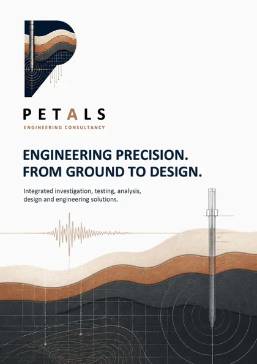

Engineering, built around understanding.
PETALS Engineering Consultancy is an India-based engineering consultancy bringing together technical knowledge, engineering analysis and practical project understanding.
We help our clients make confident decisions by connecting ground, data and design. Every project begins with understanding the ground, the data, the design requirements and the wider context. That understanding shapes better solutions, built to perform.
 01 Ground
01 Ground 02 Data
02 Data 03 Design
03 DesignThe PETALS Philosophy
PETALS combines technical capability with disciplined execution and business responsiveness. Our philosophy guides how we plan, deliver and create value: systematically, collaboratively and with clarity at every stage.
Our operating principles
A systematic approach. Technical excellence. Practical solutions. Measurable value.
Planning
We define clear objectives, scope and strategy, and plan with rigour to align people, resources and timelines for predictable delivery.
Execution
We execute with discipline and attention to detail. Our processes keep action coordinated, quality high and momentum steady.
Testing
We validate through structured testing and verification, confirming performance, safety and compliance before we move forward.
Analysis
We analyse data and performance to uncover insight. Evidence-led decisions drive continuous improvement and better outcomes.
Leadership
We lead by example with integrity and accountability, and empower our team and partners to deliver with confidence.
Sales & Business Development
We build lasting relationships through understanding and trust, connecting capabilities to opportunities.
Our Commitment
We are committed to delivering technically sound work through careful planning, reliable data, responsible engineering judgement and transparent communication.
Technical Integrity
Accuracy, sound methods and responsible interpretation.
Accountability
Clear communication and commitment to agreed deliverables.
Practical Thinking
Engineering solutions aligned with real project needs.
Transparency
Honest discussions about scope, limitations and expectations.
Why PETALS
We bring clarity, discipline and integration to every engagement. Our approach is evidence-informed, practical and focused on outcomes that matter.
Technical Accuracy
Methodical analysis and rigorous quality checks at every stage.
Reliable Data
Careful acquisition, validation and interpretation you can depend on.
Fast Execution
Streamlined workflows and decisive progress from start to finish.
Quality Deliverables
Clear, well-structured outputs that support confident decisions.
Integrated Thinking
Cross-disciplinary insight that connects the ground to the bigger picture.
Practical Engineering
Solutions grounded in real-world conditions and buildability.
Responsive Coordination
Proactive communication and coordination that keeps things moving.
Cost-Conscious Solutions
Efficient approaches that balance performance, risk and value.
Delivery model
Capabilities are assembled to suit project scope, programme and technical requirements. Specialist capability may be supported through qualified technical partners where required.
Project basis
Scaled to the needs of each project, with clear scope, roles and deliverables.
In-house
Delivered by our core team using established practices and integrated workflows.
Partner / Specialist
Specialist capability accessed through qualified technical partners where required.
Future capability
Capability evolves with emerging needs, technologies and industry direction.
Our Founder
Anujay Dutt
Founder, PETALS Engineering Consultancy
Anujay brings over a decade of professional experience across engineering, technical services, project execution and business development. He holds an M.Tech in Transportation Engineering and has completed a Business Management programme at XLRI.
- Experience
- Over a decade
- Education
- M.Tech, Transportation Engineering
- Management
- Business Management programme, XLRI
- Areas
- EngineeringTechnical servicesProject executionBusiness development

Company brochure
Our services, how we work, the industries we serve and our delivery model, in one document.
Download brochureLet's Discuss Your Project.
Share your requirements with PETALS Engineering Consultancy.